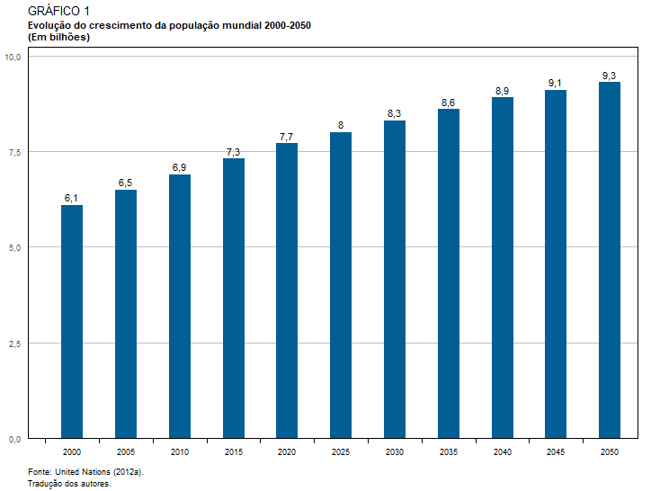
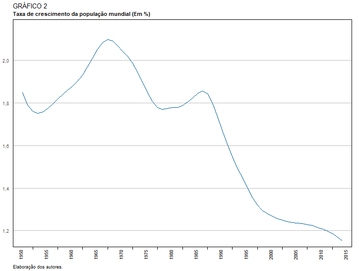
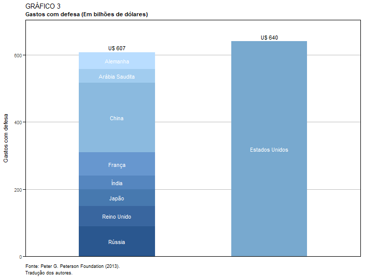
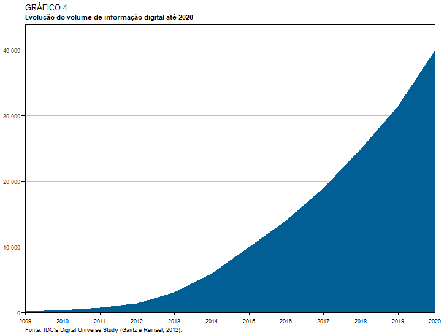
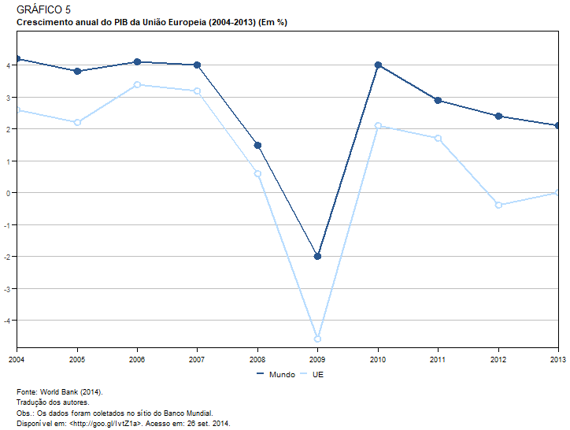
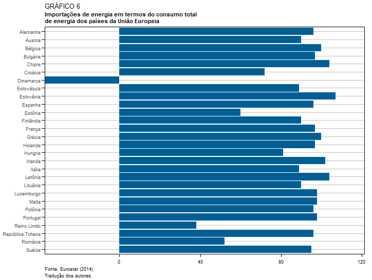
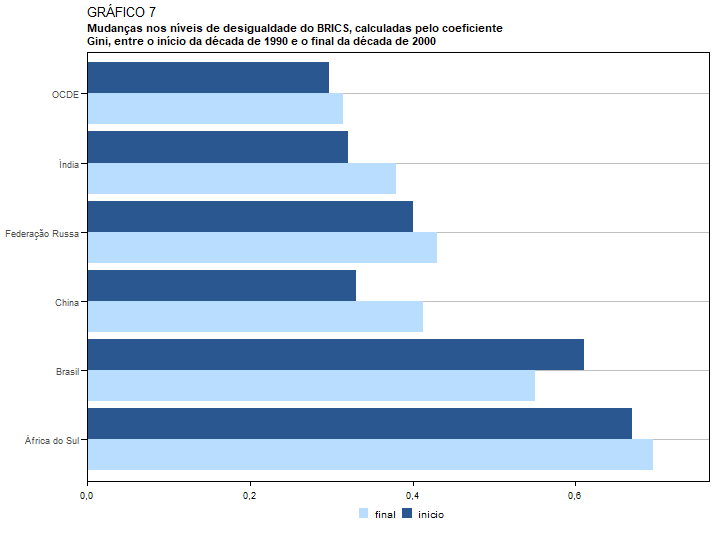
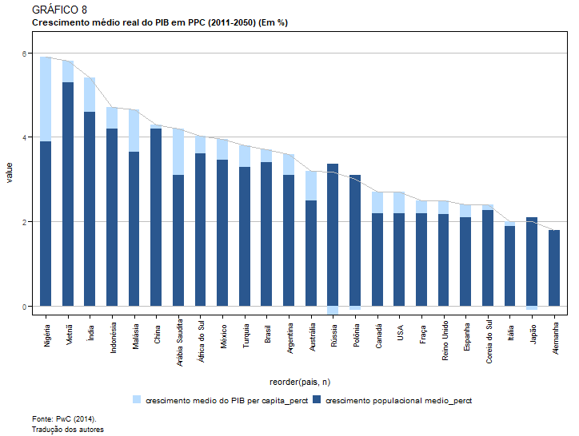

O ipeaplot é um pacote em R desenvolvido para facilitar a padronização de gráficos e figuras seguindo a política editorial do Instituto de Pesquisa Econômica Aplicada (Ipea).
Nesta vinheta, apresentamos exemplos práticos do uso do pacote para gerar visulizações de dados comuns em textos e relatórios do Ipea.
Em algumas figuras, os ajustes necessários para atender às diretrizes estilísticas do Editorial do Ipea demandam a criação de códigos específicos, extrapolando as configurações pré-estabelecidas no ipeaplot.
Essa vinheta tem, por isso, um formato de cookbook,
proporcionando orientações práticas para a utilização de outros recursos
do ggplot2.
Em todos os exemplos, é exibida a versão “bruta” da figura, tal como foi submetida à Coordenação do Editorial. Em seguida, indicamos como é possível, com o ipeaplot e algumas linhas de código adicionais, atingir o nível de padronização necessário às publicações do Ipea.
# Leitura de bibliotecas
library(ipeaplot)
library(ggplot2)
library(dplyr)
library(data.table)
library(abjData)
library(geobr)
library(reshape)
library(knitr)
# Leitura dos dados
## Gráfico 1
Ano <- factor(c(2000,2005,2010,2015,2020,2025,2030,2035,2040,2045,2050))
Populacao <- c(6.1,6.5,6.9,7.3,7.7,8.0,8.3,8.6,8.9,9.1,9.3)
labels <- as.character(Populacao)
labels <- gsub("." , "," , labels, fixed=T)
base_graf1 <- data.frame(Ano,Populacao,labels)
## Gráfico 2
Ano <- factor(c(1950, 1951, 1952, 1953, 1954, 1955, 1956, 1957, 1958,
1959, 1960, 1961, 1962, 1963, 1964, 1965, 1966, 1967,
1968, 1969, 1970, 1971, 1972, 1973, 1974, 1975, 1976,
1977, 1978, 1979, 1980, 1981, 1982, 1983, 1984, 1985,
1986, 1987, 1988, 1989, 1990, 1991, 1992, 1993, 1994,
1995, 1996, 1997, 1998, 1999, 2000, 2001, 2002, 2003,
2004, 2005, 2006, 2007, 2008, 2009, 2010, 2011, 2012,
2013, 2014))
Populacao<- c( 1.850116458, 1.791417471, 1.760491225, 1.751060624,
1.757374206, 1.773968217, 1.795950884, 1.81926587,
1.840930397, 1.860403495, 1.879485845, 1.90178203,
1.931384556, 1.96968284 , 2.011263472, 2.052385316,
2.083875031, 2.098137208, 2.091095193, 2.06831928,
2.043373483, 2.018775478, 1.985792138, 1.944170268,
1.898407101, 1.850171278, 1.807798778, 1.779963926,
1.770930519, 1.77532254 , 1.778741317, 1.77934085,
1.787498884, 1.803957627, 1.823106379, 1.844715108,
1.856490979, 1.844087147, 1.801286156, 1.7376904,
1.669804195, 1.607655387, 1.548374095, 1.4949701,
1.447065626, 1.399607643, 1.354384982, 1.318725392,
1.294773864, 1.279786607, 1.268049775, 1.257045807,
1.248951736, 1.243210965, 1.239058923, 1.236026043,
1.23309632, 1.229128787, 1.223387196, 1.215887987,
1.207869122, 1.198749205, 1.186540058, 1.170622969,
1.151783904)
labels <- as.character(Populacao)
labels <- gsub("." , "," , labels, fixed=T)
base_graf2<- data.frame(Ano,Populacao, labels)
## Gráfico 3
# Valores Hipoteticos
Pais <- factor(c("Ìndia","Japão","Alemanha","Reino Unido","França",
"Arábia Saudita","Rússia","China","Estados Unidos"))
Gasto <- c(40,50,50,60,70,40,90,207,640)
base_graf3<- data.frame(Pais,Gasto)
base_graf3$pos <- ifelse(base_graf3$Pais == 'Estados Unidos',2,1)
library(dplyr)
base_graf3 <- base_graf3 %>%
group_by(pos) %>%
mutate(total = sum(Gasto))
## Gráfico 4
Ano <- seq(2009,2020,1)
Exabytes <- c(130,360,750,1400,3100,6000,10000,14000,19000,25000,31500,40000)
base_graf4 <- data.frame(Ano,Exabytes)
## Gráfico 5
Ano <- seq(2004,2013,1)
Mundo <- c(4.2,3.8,4.1,4,1.5,-2,4,2.9,2.4,2.1)
UE <- c(2.6,2.2,3.4,3.2,0.6,-4.6,2.1,1.7,-0.4,0)
base_graf5 <- data.frame(Ano,Mundo,UE)
base_graf5<- melt(base_graf5, id=c("Ano"))
## Gráfico 6
pais <- c("Áustria","Bélgica","Bulgária","Croácia","Chipre","República Tcheca",
"Dinamarca","Estônia","Finlândia","França","Alemanha","Grécia",
"Hungria","Irlanda","Itália","Letônia","Lituânia","Luxemburgo",
"Malta","Holanda","Polônia","Portugal","România",
"Eslováquia","Eslovênia","Espanha","Suécia","Reino Unido")
petroleo <- c(90,100,97,72,104,96,-37,60,90,97,96,100,
81,102,89,104,90,98,98,97,96,98,52,89,107,96,95,38)
base_graf6 <- data.frame(pais,petroleo)
## Gráfico 7
pais <- c("África do Sul","Brasil","Federação Russa",
"China","Índia","OCDE")
final <- c(0.695,0.55,0.43,0.413,0.38,0.315)
inicio <- c(0.67,0.61,0.4,0.33,0.32,0.297)
base_graf7 <- data.frame(pais,final,inicio)
## Gráfico 8
# link <- 'https://github.com/ipeadata-lab/ipeaplot/files'
# base_graf8 <- data.table::fread(paste0(link,'/12239277/dados_grafico9.csv'),
# dec = ",", encoding = 'Latin-1')
base_graf8 <- data.table(pais = c("Nigéria", "Vietnã", "Índia", "Indonésia",
"Malásia", "China", "Arábia Saudita", "África do Sul", "México",
"Turquia", "Brasil", "Argentina", "Austrália", "Rússia", "Polônia",
"Canadá", "USA", "Fraça", "Reino Unido", "Espanha", "Coreia do Sul",
"Itália", "Japão", "Alemanha"),
`crescimento medio do PIB per capita_perct` = c(2,0.5, 0.8, 0.5, 1, 0.1, 1.1, 0.4, 0.5, 0.5, 0.3, 0.5, 0.7, -0.2,
-0.1, 0.5, 0.5, 0.3, 0.32, 0.3, 0.12, 0.1, -0.1, 0),
`crescimento populacional medio_perct` = c(3.9,5.3, 4.6, 4.2, 3.65, 4.2, 3.1, 3.62, 3.46, 3.3, 3.4, 3.1, 2.5,
3.37, 3.1, 2.2, 2.2, 2.2, 2.18, 2.1, 2.28, 1.9, 2.1, 1.8),
`crescimento do PIB (ppc)_perct` = c(5.9,5.8, 5.4, 4.7, 4.65, 4.3, 4.2, 4.02, 3.96, 3.8, 3.7, 3.6, 3.2,
3.17, 3, 2.7, 2.7, 2.5, 2.5, 2.4, 2.4, 2, 2, 1.8))
## Salvando graficos no formato Rdata
#save(base_graf1,base_graf2,base_graf3,base_graf5,base_graf6,base_graf7,base_graf8,file='bases_de_dados.Rdata')Gráfico 1
Padrão ipea
graf1 <- ggplot(data=base_graf1, aes(x=as.numeric(as.character(Ano)), y=Populacao)) +
geom_bar(stat="identity", fill = '#015f96', width=2) +
geom_rug(aes(x = as.numeric(as.character(Ano)) - 2.5),
outside = TRUE, sides = "b", length = unit(2, "mm"), linewidth = 0.25) +
coord_cartesian(expand = TRUE, clip = "off") +
labs(fill = "",
title="GRÁFICO 1",
subtitle="Evolução do crescimento da população mundial 2000-2050\n(Em bilhões)",
caption = 'Fonte: United Nations (2012a).\nTradução dos autores.') +
theme_ipea(x_breaks = 11,include_ticks = F,
include_x_text_title = F,include_y_text_title = F) +
geom_text(aes(label = gsub("\\.", ",",round(Populacao,1))),
hjust = 0.5, vjust = -0.5)
Gráfico 2
Padrão Ipea
base_graf2$Ano <- as.numeric(as.character(base_graf2$Ano))
ref <- (subset(base_graf2,substr(Ano,4,4) %in% c('5','0')))
graf2 <- ggplot(base_graf2, aes(x=Ano, y=Populacao, group = 1))+
geom_line(color = '#015f96') +
labs(fill = "",
title="GRÁFICO 2",
subtitle="Taxa de crescimento da população mundial (Em %)",
caption = 'Elaboração dos autores.') +
theme_ipea(x_breaks = 14, x_text_angle = 90, include_ticks = F,expand_y_limit = T,
include_x_text_title = F,include_y_text_title = F) +
geom_rug(data = ref, aes(x = Ano+2),inherit.aes = FALSE,
outside = TRUE, sides = "b", length = unit(2, "mm"), linewidth = 0.25) +
coord_cartesian(clip = "off")
Gráfico 3
Padrão Ipea
temp <- base_graf3 %>% distinct(pos, .keep_all = T)
graf3 <- ggplot(base_graf3, aes(x= as.character(pos), y=Gasto, fill=Pais,
label = Pais))+
geom_bar(width = 0.5, stat = "identity", color= NA) +
labs(y="Gastos com defesa",
fill = "",
title="GRÁFICO 3",
subtitle="Gastos com defesa (Em bilhões de dólares)",
caption = 'Fonte: Peter G. Peterson Foundation (2013).\nTradução dos autores.') +
scale_fill_ipea() +
geom_text( position = position_stack(vjust = 0.5), color = 'white') +
geom_text(data = temp, aes(y = total ,label = paste0("U$ ",total)), vjust = -.5) +
theme_ipea(legend.position="none",
include_x_text_title = F) +
theme(axis.ticks.x = ggplot2::element_blank(),
axis.text.x = ggplot2::element_blank())
Gráfico 4
Padrão Ipea
graf4 <- ggplot(base_graf4, aes(x=Ano)) +
geom_ribbon(aes(ymin=0, ymax=Exabytes), fill = "#015f96")+
labs(fill = "",
title="GRÁFICO 4",
subtitle="Evolução do volume de informação digital até 2020",
caption = 'Fonte: IDC’s Digital Universe Study (Gantz e Reinsel, 2012).') +
theme_ipea(legend.position="none",expand_x_limit = F,
x_breaks = 10, y_breaks = 4,
include_x_text_title = F,include_y_text_title = F)
Gráfico 5
Padrão Ipea
graf5 <- ggplot(base_graf5, aes(Ano, value, group=variable, color=variable))+
geom_line(linewidth=1)+
geom_point(aes(shape=variable, fill = variable),
size=3, stroke=1.5, show.legend = F)+
labs(color = "",
title="GRÁFICO 5",
subtitle="Crescimento anual do PIB da União Europeia (2004-2013) (Em %)",
caption = 'Fonte: World Bank (2014).\nTradução dos autores.\nObs.: Os dados foram coletados no sítio do Banco Mundial.\nDisponível em: <http://goo.gl/IvtZ1a>. Acesso em: 26 set. 2014.') +
theme_ipea(x_breaks = 10, y_breaks = 10, legend.position = 'bottom',
expand_y_limit = T,expand_x_limit = F,
include_x_text_title = F,include_y_text_title = F) +
scale_color_ipea(palette_direction = -1, ) +
scale_shape_manual(values = c(19, 21)) +
scale_fill_manual(values = c(NA,"white"))
Gráfico 6
Padrão Ipea
base_graf6$pais<- factor(base_graf6$pais, levels=rev(sort(base_graf6$pais)))
graf6 <- ggplot(data=base_graf6, aes(x=pais, y=petroleo)) +
geom_bar(stat="identity", fill = '#015f96') +
coord_flip() +
labs(fill = "",
title="GRÁFICO 6",
subtitle="Importações de energia em termos do consumo total\nde energia dos países da União Europeia",
caption = 'Fonte: Eurostat (2014).\nTradução dos autores.') +
theme_ipea(legend.position = 'none', expand_x_limit = F,
include_x_text_title = F,include_y_text_title = F)
Gráfico 7
Padrão Ipea
base_graf7<- melt(base_graf7, id=c("pais"))
graf7 <- ggplot(data=base_graf7, aes(x=pais, y=value, group=variable, fill=variable)) +
geom_bar(position='dodge',stat="identity") +
coord_flip()+
labs(fill = "",
title="GRÁFICO 7",
subtitle="Mudanças nos níveis de desigualdade do BRICS, calculadas pelo coeficiente\nGini, entre o início da década de 1990 e o final da década de 2000",
caption = '') +
theme_ipea(legend.position = 'bottom',
include_x_text_title = F,include_y_text_title = F) +
scale_fill_ipea()
Gráfico 8
Padrão Ipea
######## GRAFICO 8
base_graf8_aux <- base_graf8[,c(1,4)]
base_graf8_aux$n <- 1:nrow(base_graf8_aux)
base_graf8_new <- base_graf8[,-4]
base_graf8_new<- melt(base_graf8_new, id=c("pais"))
base_graf8_new <- base_graf8_new %>%
group_by(variable) %>%
mutate(n = 1:n())
graf8 <-
ggplot() +
geom_bar(data=base_graf8_new, aes(x = reorder(pais, n), y=value,
group=variable, fill=variable),
stat="identity", width = 0.5) +
labs(fill = "",
title="GRÁFICO 8",
subtitle="Crescimento médio real do PIB em PPC (2011-2050) (Em %)",
caption = 'Fonte: PwC (2014).\nTradução dos autores') +
geom_line(data=base_graf8_aux, aes(x = reorder(pais, n) ,y=`crescimento do PIB (ppc)_perct`, group = 1),
color = 'gray') +
scale_fill_ipea() +
theme_ipea(legend.position = 'bottom', x_text_angle = 90) +
coord_cartesian(clip = "off")